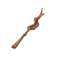
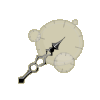

Menu barbok'you

Les Baguettes
| Niveau 1 | Baguette de l'Initié | |||
|---|---|---|---|---|
| # | Recettes : | Effets : | Caractéristiques : | Conditions : |
 |
Dommages : 1 à 4 (neutre) Initiative : 10 |
PA : 4 Portée : 3 Bonus CC : +5 Critique : 1/50 Echec : 1/50 |
||
| Description : Cette arme d'apparence rudimentaire vous donnera l'impression de savoir vous battre. | ||||
| Niveau 2 | Baguette de Boisaille | |||
|---|---|---|---|---|
| # | Recettes : | Effets : | Caractéristiques : | Conditions : |
|  | 2x Bois de Frêne 2x Bois de Châtaignier |
Dommages : 2 à 6 (neutre) Intelligence : 1 |
PA : 4 Portée : 3 Bonus CC : +5 Critique : 1/50 Echec : 1/50 |
Intelligence > 4 |
| Description : Baguette de simple facture, elle ne fera pas de votre héros une légende. | ||||
| Niveau 4 | Grande Baguette de Boisaille | |||
|---|---|---|---|---|
| # | Recettes : | Effets : | Caractéristiques : | Conditions : |
 |
3x Bois de Châtaignier 2x Bois de Frêne |
Dommages : 3 à 7 (neutre) Intelligence : 1 |
PA : 4 Portée : 3 Bonus CC : +5 Critique : 1/50 Echec : 1/50 |
Intelligence > 8 |
| Description : Baguette de simple facture, elle ne fera pas de votre héros une légende. | ||||
| Niveau 5 | Puissante Baguette de Boisaille | |||
|---|---|---|---|---|
| # | Recettes : | Effets : | Caractéristiques : | Conditions : |
 |
4x Bois de Châtaignier 2x Bois de Frêne |
Dommages : 4 à 8 (neutre) Intelligence : 1 |
PA : 4 Portée : 3 Bonus CC : +5 Critique : 1/50 Echec : 1/50 |
Intelligence > 10 |
| Description : Cette baguette n'a de puissant que le nom et encore... | ||||
| Niveau 11 | Demi-Baguette | |||
|---|---|---|---|---|
| # | Recettes : | Effets : | Caractéristiques : | Conditions : |
| 10x Pain aux Céréales 10x Bois de Frêne 1x Fer |
Dommages : 2 à 6 (eau) Vitalité : 5 Intelligence : 10 |
PA : 4 Portée : 2 Bonus CC : +5 Critique : 1/30 Echec : 1/50 |
||
| Description : Rika Zarouil la boulangère fut connue pour avoir été l'eniripsa la plus petite de la contrée. Elle faisait son pain dans des petits-fours en carton et se battait avec des demi-baguettes. | ||||
| Niveau 13 | Baguette de Glace | |||
|---|---|---|---|---|
| # | Recettes : | Effets : | Caractéristiques : | Conditions : |
 |
2x Bois de Chêne 1x Plume du Kwak de Glace 6x Bois de Châtaignier |
Dommages : 12 à 16 (neutre) Sagesse : 1 |
PA : 4 Portée : 2 Bonus CC : +5 Critique : 1/50 Echec : 1/50 |
Intelligence > 26 |
| Description : Une baguette bien sculptée, intéressante pour les novices. | ||||
| Niveau 13 | Petite Baguette de Glace | |||
|---|---|---|---|---|
| # | Recettes : | Effets : | Caractéristiques : | Conditions : |
 |
1x Plume du Kwak de Glace 1x Bois de Chêne 5x Bois de Châtaignier |
Dommages : 11 à 15 (neutre) Sagesse : 1 |
PA : 4 Portée : 2 Bonus CC : +5 Critique : 1/50 Echec : 1/50 |
Intelligence > 26 |
| Description : Une baguette bien sculptée, intéressante pour les novices. | ||||
| Niveau 14 | Grande Baguette de Glace | |||
|---|---|---|---|---|
| # | Recettes : | Effets : | Caractéristiques : | Conditions : |
| 1x Plume du Kwak de Glace 3x Bois de Chêne 6x Bois de Châtaignier |
Dommages : 13 à 17 (neutre) Sagesse : 1 |
PA : 4 Portée : 2 Bonus CC : +5 Critique : 1/50 Echec : 1/50 |
Intelligence > 28 |
|
| Description : Une baguette bien sculptée, intéressante pour les novices. | ||||
| Niveau 15 | Petite Baguette Heure | |||
|---|---|---|---|---|
| # | Recettes : | Effets : | Caractéristiques : | Conditions : |
|  | 1x Bois d'If 1x Pointe de Flèche du Bwork Archer 6x Kobalte |
Dommages : 6 à 7 (neutre) Intelligence : 7 Force : 7 |
PA : 3 Portée : 3 Bonus CC : +10 Critique : 1/30 Echec : 1/50 |
Intelligence > 25 Force > 1 |
| Description : L'eniripsa Mie Dopan confectionna cette série de baguettes piquantes pour lutter contre les vols. Capable en théorie de remonter le temps pour empêcher une agression, elle finit généralement dans l'oeil d'un démon. | ||||
| Niveau 15 | Puissante Baguette de Glace | |||
|---|---|---|---|---|
| # | Recettes : | Effets : | Caractéristiques : | Conditions : |
 |
7x Bois de Châtaignier 4x Bois de Chêne 1x Plume du Kwak de Glace |
Dommages : 14 à 18 (neutre) Intelligence : 1 |
PA : 4 Portée : 2 Bonus CC : +5 Critique : 1/50 Echec : 1/50 |
Intelligence > 30 |
| Description : Une baguette bien sculptée, intéressante pour les novices. | ||||
| Niveau 20 | Petite Baguette de Sagesse | |||
|---|---|---|---|---|
| # | Recettes : | Effets : | Caractéristiques : | Conditions : |
 |
2x Argent 3x Bois d'Erable 2x Bois de Merisier 2x Bois de Chêne |
Dommages : 10 à 14 (neutre) Sagesse : 10 Force : -10 |
PA : 4 Portée : 2 Bonus CC : +5 Critique : 1/50 Echec : 1/30 |
Intelligence > 20 Sagesse > 5 |
| Description : Cette baguette permet à son porteur d'augmenter sa sagesse. | ||||
| Niveau 20 | Petite Baguette d'Intelligence | |||
|---|---|---|---|---|
| # | Recettes : | Effets : | Caractéristiques : | Conditions : |
 |
2x Cuivre 2x Bois d'If 2x Bois d'Ebène 2x Bois de Merisier |
Dommages : 6 à 10 (neutre) Intelligence : 11 à 15 Force : -1 à -5 |
PA : 3 Portée : 2 Bonus CC : +5 Critique : 1/50 Echec : 1/20 |
Intelligence > 20 |
| Description : Cette baguette permet à son porteur d'augmenter son intelligence. | ||||
| Niveau 20 | Baguette de Liriel | |||
|---|---|---|---|---|
| # | Recettes : | Effets : | Caractéristiques : | Conditions : |
 |
8x Os de Chafer 1x Bois d'Ebène 1x Bois de Merisier 1x Bois d'Erable |
Dommages : 16 à 20 (neutre) Coup critiques : +1 Est une arme de chasse |
PA : 5 Portée : 3 Bonus CC : +5 Critique : 1/50 Echec : 1/50 |
Intelligence > 40 |
| Description : Cette baguette appartenait à l'Eniripsa Liriel qui mourût d'une overdose de fraises dans d'atroces souffrances, perdant ses ailes dans un râle de douleur à vous glacer le sang. Les collectionneurs s'arrachent cette baguette réputée maudite. | ||||
| Niveau 20 | Baguette de Feu Follesque | |||
|---|---|---|---|---|
| # | Recettes : | Effets : | Caractéristiques : | Conditions : |
 |
5x Potion d'Etincelle 1x Baguette de Boisaille 1x Bois d'If 10x Cuivre |
Dommages : 5 à 8 (feu) Agilité : -10 Chance : 5 |
PA : 3 Portée : 3 Bonus CC : +5 Critique : 1/30 Echec : 1/50 |
Intelligence > 30 |
| Description : Pour la fabrication de cette baguette lugubre, on dit qu'il faut mettre la baguette dans le corps d'un cadavre frais, et l'enterrer peu après. Mais personne n'ose imaginer comment faire. | ||||
| Niveau 20 | Baguette Heure | |||
|---|---|---|---|---|
| # | Recettes : | Effets : | Caractéristiques : | Conditions : |
 |
1x Bois d'If 1x Pointe de Flèche du Bwork Archer 8x Kobalte |
Dommages : 6 à 8 (neutre) Intelligence : 8 Force : 8 |
PA : 3 Portée : 3 Bonus CC : +10 Critique : 1/30 Echec : 1/50 |
Intelligence > 27 Force > 2 |
| Description : L'eniripsa Mie Dopan confectionna cette série de baguettes piquantes pour lutter contre les vols. Capable en théorie de remonter le temps pour empêcher une agression, elle finit généralement dans l'oeil d'un démon. | ||||
| Niveau 23 | Baguette de Sagesse | |||
|---|---|---|---|---|
| # | Recettes : | Effets : | Caractéristiques : | Conditions : |
 |
2x Argent 3x Bois d'Erable 3x Bois de Merisier 3x Bois de Chêne |
Dommages : 12 à 16 (neutre) Sagesse : 12 Force : -10 |
PA : 4 Portée : 2 Bonus CC : +5 Critique : 1/50 Echec : 1/30 |
Intelligence > 23 Sagesse > 7 |
| Description : Cette baguette permet à son porteur d'augmenter sa sagesse. | ||||
| Niveau 24 | Baguette d'Intelligence | |||
|---|---|---|---|---|
| # | Recettes : | Effets : | Caractéristiques : | Conditions : |
 |
2x Cuivre 3x Bois d'If 2x Bois d'Ebène 3x Bois de Merisier |
Dommages : 8 à 12 (neutre) Intelligence : 16 à 20 Force : -1 à -5 |
PA : 3 Portée : 2 Bonus CC : +5 Critique : 1/50 Echec : 1/20 |
Intelligence > 24 |
| Description : Cette baguette permet à son porteur d'augmenter son intelligence. | ||||
| Niveau 25 | Baguette du Tofu | |||
|---|---|---|---|---|
| # | Recettes : | Effets : | Caractéristiques : | Conditions : |
 |
1x Plume du Batofu 16x Plumes de Tofu 18x Bec du Tofu 11x Oeuf de Tofu |
Vole 3 à 4 PV (air) Vole 3 à 4 PV (feu) Agilité : 1 Est une arme de chasse |
PA : 6 Portée : 2 Bonus CC : +5 Critique : 1/50 Echec : 1/50 |
|
| Description : Contrairement à ce que certains aventuriers peuvent croire, cette baguette n'est pas utilisée par les Tofus (bien trop stupides pour savoir se servir d'une telle arme), mais contre les Tofus. En effet, les plumes de Tofu qui la composent permettent aux chasseurs de simuler la parade nuptiale des Tofus pour ensuite mieux les attraper. Mais jusqu'où iront ces terribles chasseurs pour satisfaire leurs pulsions meurtrières ? | ||||
| Niveau 25 | Grande Baguette Heure | |||
|---|---|---|---|---|
| # | Recettes : | Effets : | Caractéristiques : | Conditions : |
 |
1x Bois d'If 1x Pointe de Flèche du Bwork Archer 10x Kobalte |
Dommages : 6 à 9 (neutre) Force : 9 Intelligence : 9 |
PA : 3 Portée : 3 Bonus CC : +10 Critique : 1/30 Echec : 1/50 |
Intelligence > 29 Force > 3 |
| Description : L'eniripsa Mie Dopan confectionna cette série de baguettes piquantes pour lutter contre les vols. Capable en théorie de remonter le temps pour empêcher une agression, elle finit généralement dans l'oeil d'un démon. | ||||
| Niveau 25 | Grande Baguette de Sagesse | |||
|---|---|---|---|---|
| # | Recettes : | Effets : | Caractéristiques : | Conditions : |
 |
4x Bois de Merisier 4x Bois de Chêne 2x Argent 3x Bois d'Erable |
Dommages : 14 à 18 (neutre) Sagesse : 14 Force : -10 |
PA : 4 Portée : 2 Bonus CC : +5 Critique : 1/50 Echec : 1/30 |
Intelligence > 25 Sagesse > 9 |
| Description : Cette baguette permet à son porteur d'augmenter sa sagesse. | ||||
| Niveau 27 | Baguette Rangleuse | |||
|---|---|---|---|---|
| # | Recettes : | Effets : | Caractéristiques : | Conditions : |
 |
1x Racine de Bulbuisson 2x Bois de Bambouto 1x Racine de Bulbambou 1x Racine de Bulbiflore |
Dommages : 1 à 7 (feu) Soins : 2 à 3 |
PA : 3 Portée : 4 Bonus CC : +5 Critique : 1/50 Echec : 1/50 |
Intelligence > 50 |
| Description : Cette terrifiante baguette est capable de s'enrouler autour du cou de vos adversaires pour les étrangler lentement mais sûrement. Une façon originale et distinguée de donner la mort aux adversaires que vous respectez un peu. | ||||
| Niveau 27 | Puissante Baguette de Sagesse | |||
|---|---|---|---|---|
| # | Recettes : | Effets : | Caractéristiques : | Conditions : |
 |
5x Bois de Merisier 2x Argent 3x Bois d'Erable 5x Bois de Chêne |
Dommages : 16 à 20 (neutre) Sagesse : 16 Force : -10 |
PA : 4 Portée : 2 Bonus CC : +5 Critique : 1/50 Echec : 1/30 |
Intelligence > 27 Sagesse > 11 |
| Description : Cette baguette permet à son porteur d'augmenter sa sagesse. | ||||
| Niveau 27 | Grande Baguette d'Intelligence | |||
|---|---|---|---|---|
| # | Recettes : | Effets : | Caractéristiques : | Conditions : |
 |
2x Cuivre 4x Bois d'If 2x Bois d'Ebène 4x Bois de Merisier |
Dommages : 10 à 14 (neutre) Intelligence : 21 à 25 Force : -1 à -5 |
PA : 3 Portée : 2 Bonus CC : +5 Critique : 1/50 Echec : 1/20 |
Intelligence > 27 |
| Description : Cette baguette permet à son porteur d'augmenter son intelligence. | ||||
| Niveau 29 | Puissante Baguette d'Intelligence | |||
|---|---|---|---|---|
| # | Recettes : | Effets : | Caractéristiques : | Conditions : |
 |
2x Cuivre 5x Bois d'If 2x Bois d'Ebène 5x Bois de Merisier |
Dommages : 12 à 16 (neutre) Intelligence : 26 à 30 Force : -1 à -5 |
PA : 3 Portée : 2 Bonus CC : +5 Critique : 1/50 Echec : 1/20 |
Intelligence > 29 |
| Description : Cette baguette permet à son porteur d'augmenter son intelligence. | ||||
| Niveau 30 | Petite Baguette à Pans | |||
|---|---|---|---|---|
| # | Recettes : | Effets : | Caractéristiques : | Conditions : |
 |
10x Cuir de Boufton Blanc 8x Bois d'Erable 6x Kobalte 5x Anneau Vitalesque |
Dommages : 7 à 10 (neutre) Vitalité : 11 à 15 Intelligence : 26 à 35 Chance : -1 à -5 |
PA : 4 Portée : 2 Bonus CC : +7 Critique : 1/50 Echec : 1/50 |
Intelligence > 50 |
| Description : L'émancipation des ménagères Eniripsa de moins de 50 ans commença grâce à cette baguette: redoutable à la fois pour les monstres et pour la poussière. Pratique non ? | ||||
| Niveau 30 | Baguette Hoh' | |||
|---|---|---|---|---|
| # | Recettes : | Effets : | Caractéristiques : | Conditions : |
 |
Dommages : 5 à 12 (feu) |
PA : 4 Portée : 2 Bonus CC : +5 Critique : 1/50 Echec : 1/50 |
Intelligence > 30 Vitalité > 30 |
|
| Description : Cette arme est une Shushette, elle est capable de voler les fragments d'âmes des Shushus de Rushu que possèdent les monstres. Une fois que vous les aurez récupérés, vous pourrez tenter de les incruster directement sur l'arme afin de la rendre plus puissante. | ||||
| Niveau 30 | Terrifiante Baguette Heure | |||
|---|---|---|---|---|
| # | Recettes : | Effets : | Caractéristiques : | Conditions : |
 |
1x Bois d'If 1x Pointe de Flèche du Bwork Archer 12x Kobalte |
Dommages : 6 à 10 (neutre) Intelligence : 10 Force : 10 |
PA : 3 Portée : 3 Bonus CC : +10 Critique : 1/30 Echec : 1/50 |
Intelligence > 31 Force > 4 |
| Description : L'eniripsa Mie Dopan confectionna cette série de baguettes piquantes pour lutter contre les vols. Capable en théorie de remonter le temps pour empêcher une agression, elle finit généralement dans l'oeil d'un démon. | ||||
| Niveau 33 | Baguette en Racine d'Abraknyde | |||
|---|---|---|---|---|
| # | Recettes : | Effets : | Caractéristiques : | Conditions : |
 |
5x Racine d'Abraknyde 5x Ecorce d'Abraknyde 2x Ambre d'Abraknyde 20x Bois de Châtaignier 2x Bois de Noyer |
Dommages : 16 à 20 (neutre) Sagesse : 26 à 30 Chance : -1 à -20 |
PA : 4 Portée : 2 Bonus CC : +5 Critique : 1/50 Echec : 1/40 |
Intelligence > 33 Sagesse > 10 |
| Description : Cette baguette utilise les propriétés magiques de la Racine d'Abraknyde qui est encore vivante, méfiez-vous des effets néfastes de cette baguette, il lui arrive parfois de se retourner contre son maître. | ||||
| Niveau 35 | Baguette à Pans | |||
|---|---|---|---|---|
| # | Recettes : | Effets : | Caractéristiques : | Conditions : |
 |
12x Cuir de Boufton Blanc 10x Bois d'Erable 7x Kobalte 7x Anneau Vitalesque |
Dommages : 8 à 12 (neutre) Vitalité : 11 à 15 Intelligence : 26 à 40 Chance : -1 à -5 |
PA : 4 Portée : 2 Bonus CC : +7 Critique : 1/50 Echec : 1/50 |
Intelligence > 55 |
| Description : L'émancipation des ménagères Eniripsa de moins de 50 ans commença grâce à cette baguette: redoutable à la fois pour les monstres et pour la poussière. Pratique non ? | ||||
| Niveau 35 | Daguette | |||
|---|---|---|---|---|
| # | Recettes : | Effets : | Caractéristiques : | Conditions : |
 |
1x Bashers 1x Baguette Heure 4x Potion de Courant d'Air 5x Bois d'Erable 2x Argent |
Dommages : 6 à 15 (air) Agilité : 11 à 20 Sagesse : 6 à 10 Vitalité : 6 à 20 Force : -26 à -30 |
PA : 4 Portée : 2 Bonus CC : +5 Critique : 1/40 Echec : 1/40 |
Intelligence > 25 |
| Description : Un sculpteur un peu farceur tenta de faire passer ses baguettes pour des dagues. Son stratagème n'eu aucun succès mais ses baguettes, elles, en eurent. | ||||
| Niveau 36 | Petite Baguette d'Eglise | |||
|---|---|---|---|---|
| # | Recettes : | Effets : | Caractéristiques : | Conditions : |
 |
2x Argent 7x Bois de Chêne 2x Sang du Vampire 8x Bronze |
Dommages : 5 à 8 (neutre) Intelligence : 16 à 20 Force : 21 à 25 Sagesse : -1 à -5 |
PA : 3 Portée : 3 Bonus CC : +10 Critique : 1/30 Echec : 1/50 |
Intelligence > 36 Force > 25 |
| Description : Cette lourde baguette a fracassé plus d'un crâne de pécheur. Les prêtres Iop l'utilisant pour absoudre radicalement et définitivement un repenti. | ||||
| Niveau 40 | Baguette Stror'Di'Ner' | |||
|---|---|---|---|---|
| # | Recettes : | Effets : | Caractéristiques : | Conditions : |
 |
Dommages : 7 à 16 (eau) |
PA : 4 Portée : 2 Bonus CC : +5 Critique : 1/50 Echec : 1/50 |
Chance > 40 Vitalité > 40 |
|
| Description : Cette arme est une Shushette, elle est capable de voler les fragments d'âmes des Shushus de Rushu que possèdent les monstres. Une fois que vous les aurez récupérés, vous pourrez tenter de les incruster directement sur l'arme afin de la rendre plus puissante. | ||||
| Niveau 40 | Baguette Larvesque | |||
|---|---|---|---|---|
| # | Recettes : | Effets : | Caractéristiques : | Conditions : |
 |
10x Poudre de Perlinpainpain 4x Peau de Larve Bleue 3x Peau de Larve Orange 2x Peau de Larve Verte 1x Petite Perle Dorée |
PA perdu à la cible : 1 à 2 PV rendus : 8 à 12 |
PA : 3 Portée : 4 Bonus CC : +5 Critique : 1/40 Echec : 1/50 |
|
| Description : Cette terrifiante baguette est en fait un boyau de larve desséché puis enchanté, et enfin réhydraté. Il ne ressemble plus à rien désormais, un peu comme vous en fait, sauf que vous n'êtes même pas enchanté. | ||||
| Niveau 40 | Discrète Baguette d'Houvette | |||
|---|---|---|---|---|
| # | Recettes : | Effets : | Caractéristiques : | Conditions : |
 |
11x Pic du Prespic 10x Tige de Pissenlit Diabolique 4x Bourgeon d'Abraknyde 5x Fer 5x Bois d'Ebène |
Dommages : 5 à 8 (neutre) Sagesse : 18 Intelligence : 10 Vitalité : -25 Chance : 5 |
PA : 3 Portée : 2 Bonus CC : +5 Critique : 1/50 Echec : 1/50 |
Sagesse > 10 Intelligence > 45 |
| Description : Houvette inventa ces baguettes pour ramener son mari enutrof du bar où il passait ses journées. Bien utilisées, celles-ci permettaient de redonner du piquant à leur couple, mais nul ne dit comment. | ||||
| Niveau 40 | Grande Baguette à Pans | |||
|---|---|---|---|---|
| # | Recettes : | Effets : | Caractéristiques : | Conditions : |
 |
14x Cuir de Boufton Blanc 12x Bois d'Erable 8x Kobalte 9x Anneau Vitalesque |
Dommages : 9 à 14 (neutre) Vitalité : 11 à 20 Intelligence : 26 à 40 Chance : -1 à -5 |
PA : 4 Portée : 2 Bonus CC : +7 Critique : 1/50 Echec : 1/50 |
Intelligence > 60 |
| Description : L'émancipation des ménagères Eniripsa de moins de 50 ans commença grâce à cette baguette: redoutable à la fois pour les monstres et pour la poussière. Pratique non ? | ||||
| Niveau 41 | Baguette d'Eglise | |||
|---|---|---|---|---|
| # | Recettes : | Effets : | Caractéristiques : | Conditions : |
 |
2x Argent 9x Bois de Chêne 2x Sang du Vampire 10x Bronze |
Dommages : 5 à 9 (neutre) Force : 21 à 25 Intelligence : 21 à 25 Sagesse : -1 à -5 |
PA : 3 Portée : 3 Bonus CC : +10 Critique : 1/30 Echec : 1/50 |
Intelligence > 40 Force > 25 |
| Description : Cette lourde baguette a fracassé plus d'un crâne de pécheur. Les prêtres Iop l'utilisant pour absoudre radicalement et définitivement un repenti. | ||||
| Niveau 43 | Baguette Cetera | |||
|---|---|---|---|---|
| # | Recettes : | Effets : | Caractéristiques : | Conditions : |
 |
2x Bois d'If 3x Tronc de Kokoko 1x Bois de Bambou 6x Bois de Châtaignier 1x Racine de Bulbiflore |
Dommages : 8 à 17 (neutre) Soins : 2 à 4 |
PA : 4 Portée : 4 Bonus CC : +5 Critique : 1/50 Echec : 1/50 |
Intelligence > 60 |
| Description : L'artisan à l'origine de cette baguette avait de nombreux apprentis qu'il faisait travailler à longueur de journées. Il était censé leur apprendre les ficelles du métier, mais était en fait très mauvais pédagogue, il commençait toujours ses explications, mais ne les finissait jamais. | ||||
| Niveau 43 | Baguette Sylvien | |||
|---|---|---|---|---|
| # | Recettes : | Effets : | Caractéristiques : | Conditions : |
 |
1x Aluminite 4x Bois de Châtaignier 1x Ambre 4x Bois de Noyer 2x Bourgeon d'Abraknyde |
Dommages : 8 à 14 (air) Portée : +1 Sagesse : 1 à 10 Chance : 1 à 10 Force : -11 à -20 |
PA : 5 Portée : 2 Bonus CC : +4 Critique : 1/40 Echec : 1/40 |
Agilité > 80 |
| Description : La Baguette Sylvien a l'étrange pouvoir de conférer une vue perçante à son porteur. Charge ensuite à celui ci d'être suffisamment agile pour pouvoir fuir le danger. | ||||
| Niveau 45 | Baguette d'Houvette | |||
|---|---|---|---|---|
| # | Recettes : | Effets : | Caractéristiques : | Conditions : |
 |
11x Pic du Prespic 14x Tige de Pissenlit Diabolique 6x Bourgeon d'Abraknyde 8x Fer 6x Bois d'Ebène |
Dommages : 5 à 8 (neutre) Intelligence : 15 Sagesse : 20 Chance : 7 Vitalité : -29 |
PA : 3 Portée : 2 Bonus CC : +5 Critique : 1/50 Echec : 1/50 |
Sagesse > 12 Intelligence > 48 |
| Description : Houvette inventa ces baguettes pour ramener son mari Enutrof du bar où il passait ses journées. Bien utilisées, celles-ci permettaient de redonner du piquant à leur couple, mais nul ne dit comment. | ||||
| Niveau 45 | Indispensable Baguette à Pans | |||
|---|---|---|---|---|
| # | Recettes : | Effets : | Caractéristiques : | Conditions : |
 |
16x Cuir de Boufton Blanc 14x Bois d'Erable 9x Kobalte 11x Anneau Vitalesque |
Dommages : 10 à 16 (neutre) Vitalité : 11 à 20 Intelligence : 26 à 45 Chance : -1 à -5 |
PA : 4 Portée : 2 Bonus CC : +7 Critique : 1/50 Echec : 1/50 |
Intelligence > 65 |
| Description : L'émancipation des ménagères Eniripsa de moins de 50 ans commença grâce à cette baguette: redoutable à la fois pour les monstres et pour la poussière. Pratique non ? | ||||
| Niveau 46 | Lourde Baguette d'Eglise | |||
|---|---|---|---|---|
| # | Recettes : | Effets : | Caractéristiques : | Conditions : |
 |
2x Argent 11x Bois de Chêne 2x Sang du Vampire 12x Bronze |
Dommages : 5 à 10 (neutre) Force : 21 à 30 Intelligence : 21 à 30 Sagesse : -1 à -5 |
PA : 3 Portée : 3 Bonus CC : +10 Critique : 1/30 Echec : 1/50 |
Intelligence > 45 Force > 25 |
| Description : Cette lourde baguette a fracassé plus d'un crâne de pécheur. Les prêtres Iop l'utilisant pour absoudre radicalement et définitivement un repenti. | ||||
| Niveau 48 | L'Hyldegarde | |||
|---|---|---|---|---|
| # | Recettes : | Effets : | Caractéristiques : | Conditions : |
 |
1x Magnésite 3x Bois de Bombu 3x Bois de Charme 5x Bois de Châtaignier 2x Bourgeon d'Abraknyde |
Dommages : 11 à 23 (eau) Force : 3 à 7 Intelligence : 16 à 30 Vitalité : -1 à -60 Sagesse : -1 à -60 |
PA : 4 Portée : 4 Bonus CC : +5 Critique : 1/50 Echec : 1/50 |
|
| Description : Cette baguette fut créée il y a de nombreuses années dans les flammes de la forge de Mort Dur. Cette arme nécessite d'avoir toujours de l'eau à côté de soi pour pouvoir maitriser son feu intérieur... | ||||
| Niveau 50 | Grande Baguette d'Houvette | |||
|---|---|---|---|---|
| # | Recettes : | Effets : | Caractéristiques : | Conditions : |
 |
11x Pic du Prespic 18x Tige de Pissenlit Diabolique 8x Bourgeon d'Abraknyde 11x Fer 7x Bois d'Ebène |
Dommages : 5 à 9 (neutre) Intelligence : 20 Sagesse : 22 Chance : 10 Vitalité : -33 |
PA : 3 Portée : 2 Bonus CC : +5 Critique : 1/50 Echec : 1/50 |
Sagesse > 15 Intelligence > 50 |
| Description : Houvette inventa ces baguettes pour ramener son mari enutrof du bar où il passait ses journées. Bien utilisées, celles-ci permettaient de redonner du piquant à leur couple, mais nul ne dit comment. | ||||
| Niveau 50 | Baguette Han'Dar' | |||
|---|---|---|---|---|
| # | Recettes : | Effets : | Caractéristiques : | Conditions : |
 |
Dommages : 8 à 19 (terre) |
PA : 4 Portée : 3 Bonus CC : +5 Critique : 1/50 Echec : 1/50 |
Force > 50 Vitalité > 50 |
|
| Description : Cette arme est une Shushette, elle est capable de voler les fragments d'âmes des Shushus de Rushu que possèdent les monstres. Une fois que vous les aurez récupérés, vous pourrez tenter de les incruster directement sur l'arme afin de la rendre plus puissante. | ||||
| Niveau 50 | Baguette Ni'Ninnin | |||
|---|---|---|---|---|
| # | Recettes : | Effets : | Caractéristiques : | Conditions : |
 |
8x Bois d'Orme 8x Bois d'If 5x Bois de Tronknyde 10x Tronc de Kokoko 10x Bourgeon d'Abraknyde Sombre 1x Saphir |
Vole 1 à 10 PV (feu) Sagesse : 11 à 20 Vitalité : 21 à 40 PA : +1 Intelligence : -61 à -90 |
PA : 4 Portée : 4 Bonus CC : +10 Critique : 1/50 Echec : 1/30 |
Intelligence > 99 Sagesse > 20 |
| Description : Cette œuvre d'art symbolise l'alliance de la pureté... et de la stupidité. Son créateur devait l'être un peu aussi, car il lui conféra d'énormes pouvoirs magiques. | ||||
| Niveau 50 | Baguette Deuh-Pain | |||
|---|---|---|---|---|
| # | Recettes : | Effets : | Caractéristiques : | Conditions : |
 |
12x Bois d'Orme 50x Eau 50x Sel 25x Farine de Blé 25x Levure de Boulanger 1x Bois de Charme |
Dommages : 6 à 10 (neutre) Portée : +1 Sagesse : 26 à 30 Chance : 16 à 20 Force : -1 à -20 |
PA : 3 Portée : 5 Bonus CC : +5 Critique : 1/50 Echec : 1/50 |
Sagesse > 40 Intelligence > 100 |
| Description : A l'origine destinée à être mangée, cette baguette est devenue une arme redoutée. En effet, Xavier le Boulanger l'a oubliée dans son four pendant 234 ans alors qu'il était parti distribuer des pains aux monstres autour de sa boulangerie. | ||||
| Niveau 52 | Baguette des Cieux | |||
|---|---|---|---|---|
| # | Recettes : | Effets : | Caractéristiques : | Conditions : |
 |
1x Saphir 2x Rubis 1x Diamant 11x Bois de Merisier 10x Bois d'If 5x Bois d'Ebène |
Dommages : 11 à 15 (neutre) Agilité : 31 à 45 Vitalité : 31 à 45 Portée : +1 Chance : -1 à -10 Force : -1 à -10 |
PA : 4 Portée : 4 Bonus CC : +5 Critique : 1/50 Echec : 1/50 |
Intelligence > 104 Vitalité > 20 Agilité > 10 |
| Description : Cette baguette fut bénie par Helle du haut des cieux. Elle procure à son porteur agilité et vitalité dans les batailles. | ||||
| Niveau 52 | Imposante Baguette d'Eglise | |||
|---|---|---|---|---|
| # | Recettes : | Effets : | Caractéristiques : | Conditions : |
 |
2x Argent 13x Bois de Chêne 2x Sang du Vampire 14x Bronze |
Dommages : 5 à 11 (neutre) Force : 21 à 40 Intelligence : 21 à 40 Sagesse : -1 à -5 |
PA : 3 Portée : 3 Bonus CC : +10 Critique : 1/30 Echec : 1/50 |
Intelligence > 51 Force > 25 |
| Description : Cette lourde baguette a fracassé plus d'un crâne de pécheur. Les prêtres Iop l'utilisant pour absoudre radicalement et définitivement un repenti. | ||||
| Niveau 55 | Traumatisante Baguette d'Houvette | |||
|---|---|---|---|---|
| # | Recettes : | Effets : | Caractéristiques : | Conditions : |
 |
11x Pic du Prespic 22x Tige de Pissenlit Diabolique 8x Bourgeon d'Abraknyde 14x Fer 8x Bois d'Ebène |
Dommages : 5 à 10 (neutre) Intelligence : 25 Sagesse : 23 Chance : 12 Vitalité : -40 |
PA : 3 Portée : 2 Bonus CC : +5 Critique : 1/50 Echec : 1/50 |
Sagesse > 17 Intelligence > 53 |
| Description : Houvette inventa ces baguettes pour ramener son mari enutrof du bar où il passait ses journées. Bien utilisées, celles-ci permettaient de redonner du piquant à leur couple, mais nul ne dit comment. | ||||
| Niveau 56 | Petite Baguette Meneuse | |||
|---|---|---|---|---|
| # | Recettes : | Effets : | Caractéristiques : | Conditions : |
 |
3x Bois de Charme 1x Cristal 3x Lisseur 5x Aile du Tofu Maléfique 10x Amulette du Petit Hibou 10x Amulette du Petit Ours |
Dommages : 9 à 18 (neutre) Intelligence : 41 à 50 Force : 16 à 20 Résistance : 2 (eau) Résistance : 2 (air) Résistance : 2 (feu) Agilité : -1 à -20 Vitalité : -1 à -30 |
PA : 4 Portée : 4 Bonus CC : +5 Critique : 1/50 Echec : 1/50 |
Intelligence > 80 |
| Description : Selon l'étiquette, cette baguette aurait l'étrange pouvoir de faire obéir les gens. Le mode d'emploi stipule simplement de l'agiter fortement devant une personne. En cas de mauvais fonctionnement, l'agiter sur la personne marche bien aussi. | ||||
| Niveau 59 | Baguette du Scarabosse Doré | |||
|---|---|---|---|---|
| # | Recettes : | Effets : | Caractéristiques : | Conditions : |
 |
1x Antennes du Scarabosse Doré 1x Ailes du Scarabosse Doré 2x Carapace de Scarafeuille Blanc 2x Carapace de Scarafeuille Bleu 2x Carapace de Scarafeuille Rouge 2x Carapace de Scarafeuille Vert |
PV rendus : 11 à 30 Soins : 1 à 3 Augmente les dommages de 6 à 20% |
PA : 4 Portée : 4 Bonus CC : +10 Critique : 1/30 Echec : 1/60 |
|
| Description : Cette baguette magique est parfaite pour dépoussiérer les vieux meubles ou les vieilles personnes. | ||||
| Niveau 59 | Le Tison Fûté | |||
|---|---|---|---|---|
| # | Recettes : | Effets : | Caractéristiques : | Conditions : |
 |
4x Potion d'Incendie 5x Potion de Flambée 1x Puissante Baguette de Boisaille 5x Bois d'Ebène 5x Or 1x Ambre d'Abraknyde Sombre |
Dommages : 9 à 16 (feu) Force : 6 à 20 Agilité : 6 à 20 Intelligence : 16 à 30 Coup critiques : +3 à 4 Chance : -6 à -25 |
PA : 3 Portée : 3 Bonus CC : +7 Critique : 1/30 Echec : 1/50 |
Intelligence > 70 Force > 30 |
| Description : Les origines de cette baguette restent obscures. Cependant, elle a toujours aidé ses heureux possesseurs à trouver les chemins les moins encombrés d'Amakna, ce qui peut servir les jours de grande influence sur le domaine du bouftou royal. | ||||
| Niveau 60 | Baguette Ta'Lay' | |||
|---|---|---|---|---|
| # | Recettes : | Effets : | Caractéristiques : | Conditions : |
 |
Dommages : 8 à 21 (air) |
PA : 4 Portée : 3 Bonus CC : +5 Critique : 1/50 Echec : 1/50 |
Agilité > 60 Vitalité > 60 |
|
| Description : Cette arme est une Shushette, elle est capable de voler les fragments d'âmes des Shushus de Rushu que possèdent les monstres. Une fois que vous les aurez récupérés, vous pourrez tenter de les incruster directement sur l'arme afin de la rendre plus puissante. | ||||
| Niveau 61 | Baguette Meneuse | |||
|---|---|---|---|---|
| # | Recettes : | Effets : | Caractéristiques : | Conditions : |
 |
3x Bois de Charme 1x Cristal 4x Lisseur 10x Amulette de l'Ours 10x Amulette du Hibou 7x Aile du Tofu Maléfique |
Dommages : 11 à 20 (neutre) Intelligence : 46 à 55 Force : 21 à 25 Résistance : 2 à 3 (eau) Résistance : 2 à 3 (air) Résistance : 2 à 3 (feu) Agilité : -1 à -20 Vitalité : -1 à -30 |
PA : 4 Portée : 4 Bonus CC : +5 Critique : 1/50 Echec : 1/50 |
Intelligence > 85 |
| Description : Selon l'étiquette, cette baguette aurait l'étrange pouvoir de faire obéir les gens. Le mode d'emploi stipule simplement de l'agiter fortement devant une personne. En cas de mauvais fonctionnement, l'agiter sur la personne marche bien aussi. | ||||
| Niveau 63 | Balgourde des Clairettes | |||
|---|---|---|---|---|
| # | Recettes : | Effets : | Caractéristiques : | Conditions : |
 |
1x Ambre d'Abraknyde Sombre 5x Bois de Tronknyde 5x Bois d'Orme 5x Bois de Merisier 1x Bakélélite 1x Rubis |
Dommages : 8 à 20 (feu) Intelligence : 16 à 35 Augmente les dommages de 6 à 15% |
PA : 4 Portée : 4 Bonus CC : +10 Critique : 1/30 Echec : 1/50 |
Intelligence > 63 Sagesse > 30 |
| Description : La femme de Brouce Boulgoure, une Eniripsa, ne cessait de lui voler sa célèbre hache. Pour mettre un terme à ces bêtises, il lui coupa une aile et un bras et pour s'excuser, il lui offrît cette Baguette. Voilà un homme qui savait y faire avec les femmes. | ||||
| Niveau 63 | Baguette Hylique | |||
|---|---|---|---|---|
| # | Recettes : | Effets : | Caractéristiques : | Conditions : |
 |
2x Bois de Bambou 3x Bois de Charme 6x Racine de Bulbambou 3x Bois de Chêne 6x Bois d'Oliviolet 5x Tronc de Kokoko |
Dommages : 5 à 8 (neutre) Dommages : 5 à 8 (feu) Soins : 4 à 5 Intelligence : 16 à 25 |
PA : 4 Portée : 4 Bonus CC : +5 Critique : 1/50 Echec : 1/50 |
Intelligence > 150 |
| Description : Une fois sculptée, cette baguette a été trempée dans la bière pendant plusieurs années. Elle a déjà commencé à pourrir, mais elle garde cependant encore quelques propriétés magiques, suffisantes pour divertir ou exterminer vos alliés. | ||||
| Niveau 65 | Pieu Vampirique | |||
|---|---|---|---|---|
| # | Recettes : | Effets : | Caractéristiques : | Conditions : |
 |
5x Liquide vampiresque 5x Potion d'Incendie 1x Baguette de Liriel 3x Bois de Charme 5x Manganèse 10x Argent |
Vole 6 à 15 PV (feu) Intelligence : -1 à -30 Vitalité : 21 à 30 Coup critiques : +1 à 2 |
PA : 6 Portée : 3 Bonus CC : +5 Critique : 1/50 Echec : 1/20 |
Agilité > 30 Sagesse < 60 |
| Description : Le pieu vampirique est en fait la baguette d'un vampire depuis longtemps retiré de la vie sociale et de la boucherie. Cet étrange bout de bois a cependant gardé quelques uns des avantages de son ancien maître... | ||||
| Niveau 66 | Grande Baguette Meneuse | |||
|---|---|---|---|---|
| # | Recettes : | Effets : | Caractéristiques : | Conditions : |
 |
4x Bois de Charme 1x Cristal 5x Lisseur 10x Belle Amulette de l'Ours 10x Belle Amulette du Hibou 9x Aile du Tofu Maléfique |
Dommages : 12 à 21 (neutre) Intelligence : 51 à 60 Force : 21 à 30 Résistance : 3 (eau) Résistance : 3 (air) Résistance : 3 (feu) Agilité : -1 à -20 Vitalité : -1 à -30 |
PA : 4 Portée : 4 Bonus CC : +5 Critique : 1/50 Echec : 1/50 |
Intelligence > 90 |
| Description : Selon l'étiquette, cette baguette aurait l'étrange pouvoir de faire obéir les gens. Le mode d'emploi stipule simplement de l'agiter fortement devant une personne. En cas de mauvais fonctionnement, l'agiter sur la personne marche bien aussi. | ||||
| Niveau 67 | Baguette en Racine d'Abraknyde Sombre | |||
|---|---|---|---|---|
| # | Recettes : | Effets : | Caractéristiques : | Conditions : |
 |
5x Ecorce d'Abraknyde Sombre 5x Racine d'Abraknyde Sombre 2x Ambre d'Abraknyde Sombre 5x Bourgeon d'Abraknyde Sombre 10x Bois de Merisier 10x Bois d'If |
Dommages : 12 à 16 (feu) Force : -21 à -40 Chance : -21 à -40 Agilité : -21 à -40 Sagesse : 31 à 40 Intelligence : 11 à 20 |
PA : 4 Portée : 4 Bonus CC : +5 Critique : 1/50 Echec : 1/50 |
Intelligence > 70 Sagesse > 70 |
| Description : Cette baguette a parfois tendance à reprendre vie et se révolter contre son maître. Dans ce cas-là, la meilleure chose à faire reste de la donner à votre ennemi, ou à un Iop qui pensera que vous lui faîtes un cadeau. | ||||
| Niveau 70 | Baguette Euh'Laille'Fe' | |||
|---|---|---|---|---|
| # | Recettes : | Effets : | Caractéristiques : | Conditions : |
 |
Dommages : 3 à 7 (air) Dommages : 3 à 7 (eau) Dommages : 3 à 7 (feu) Dommages : 3 à 7 (terre) |
PA : 5 Portée : 3 Bonus CC : +2 Critique : 1/40 Echec : 1/40 |
Chance > 35 Force > 35 Intelligence > 35 Agilité > 35 Vitalité > 70 |
|
| Description : Cette arme est une Shushette, elle est capable de voler les fragments d'âmes des Shushus de Rushu que possèdent les monstres. Une fois que vous les aurez récupérés, vous pourrez tenter de les incruster directement sur l'arme afin de la rendre plus puissante. | ||||
| Niveau 71 | Excellente Baguette Meneuse | |||
|---|---|---|---|---|
| # | Recettes : | Effets : | Caractéristiques : | Conditions : |
 |
5x Bois de Charme 1x Cristal 6x Lisseur 10x Puissante Amulette de l'Ours 10x Puissante Amulette du Hibou 11x Aile du Tofu Maléfique |
Dommages : 13 à 23 (neutre) Intelligence : 56 à 65 Force : 26 à 35 Résistance : 4 à 6 (eau) Résistance : 4 à 6 (air) Résistance : 4 à 6 (feu) Agilité : -1 à -20 Vitalité : -1 à -30 |
PA : 4 Portée : 4 Bonus CC : +5 Critique : 1/50 Echec : 1/50 |
Intelligence > 100 |
| Description : Selon l'étiquette, cette baguette aurait l'étrange pouvoir de faire obéir les gens. Le mode d'emploi stipule simplement de l'agiter fortement devant une personne. En cas de mauvais fonctionnement, l'agiter sur la personne marche bien aussi. | ||||
| Niveau 72 | Bagdette Café | |||
|---|---|---|---|---|
| # | Recettes : | Effets : | Caractéristiques : | Conditions : |
 |
1x Corail Magistral 8x Bois de Bombu 12x Bois d'Erable 2x Humérus du Sparo 3x Peau de Mob l'Eponge 15x Chicot du Flib |
Dommages : 5 à 8 (eau) Dommages : 5 à 8 (neutre) Chance : 16 à 30 Intelligence : 16 à 30 Vitalité : 16 à 30 Sagesse : 16 à 30 Soins : 4 à 5 |
PA : 3 Portée : 4 Bonus CC : +5 Critique : 1/15 Echec : 1/50 |
Intelligence > 100 Chance > 100 |
| Description : Cette baguette appartient au célèbre Grinegau, qui fait du très bon café, mais qui ne vendra pas son échelle. | ||||
| Niveau 75 | Baguette Helles | |||
|---|---|---|---|---|
| # | Recettes : | Effets : | Caractéristiques : | Conditions : |
 |
1x Grelot 2x Aile du Tofu Maléfique 10x Or 10x Bois d'Oliviolet 4x Bois de Tronknyde 10x Bois d'Orme |
Dommages : 11 à 14 (neutre) Résistance : 3 à 5% (neutre) Intelligence : 31 à 40 Sagesse : 21 à 30 Prospection : -1 à -5 |
PA : 3 Portée : 4 Bonus CC : +5 Critique : 1/40 Echec : 1/40 |
Intelligence > 50 Sagesse > 30 |
| Description : Cette baguette est fabriquée dans des conditions extrêmes, presques identiques à celles du coeur de la terre dit-on. Son énorme puissance viendrait de là. Personne ne peut vraiment vérifier hormis les artisans capables de la fabriquer. | ||||
| Niveau 79 | La Bidjiz | |||
|---|---|---|---|---|
| # | Recettes : | Effets : | Caractéristiques : | Conditions : |
 |
2x Etoffe du Rat Blanc 1x Poudre explosive de Gourlo 1x Talon d'achille de l'Abrakleur sombre 3x Cristal 17x Duvet du Kilibriss 17x Pierre de Saphir |
Dommages : 13 à 22 (neutre) PM : 1 Agilité : 26 à 40 Sagesse : 16 à 25 Coup critiques : +3 à 5 Vitalité : 31 à 50 |
PA : 4 Portée : 5 Bonus CC : +10 Critique : 1/40 Echec : 1/50 |
Agilité > 150 |
| Description : Avec la Bidjiz, vous resterez vivant, sûrement parce que vos adversaires se mettront à danser en voyant les multiples facettes de la boule qui orne cette baguette. | ||||
| Niveau 80 | Baguette Affeulante | |||
|---|---|---|---|---|
| # | Recettes : | Effets : | Caractéristiques : | Conditions : |
 |
1x Metaria Mage rouge 2x Feuille de Fourbasse 6x Kole 5x Bois de Merisier 5x Bois d'Ebène 10x Bois de Bombu 2x Ecorce d'Abraknyde Sombre |
Dommages : 11 à 14 (feu) Intelligence : 21 à 40 Initiative : 201 à 300 Vitalité : 41 à 60 Résistance : 3 à 5% (eau) Force : -40 Sagesse : 11 à 20 |
PA : 4 Portée : 3 Bonus CC : +5 Critique : 1/40 Echec : 1/50 |
Intelligence > 60 Vitalité > 40 |
| Description : Cette baguette a d'étranges propriétés : au toucher, elle est brûlante. Mais le plus énigmatique reste son odeur de cendre, qui laisse à penser que le bois de cette baguette aurait survécu à un feu de forêt. | ||||
| Niveau 80 | Baguette de Kouartz | |||
|---|---|---|---|---|
| # | Recettes : | Effets : | Caractéristiques : | Conditions : |
 |
1x Bois Envoûté 1x Diamant 1x Cristal 12x Bois de Bombu 12x Bois d'Oliviolet 20x Kouartz 12x Bois d'Ebène |
Dommages : 13 à 27 (neutre) PV rendus : 9 à 23 Vitalité : 21 à 40 Sagesse : 16 à 25 Intelligence : 16 à 35 Augmente les dommages de 6 à 10% Initiative : 101 à 200 |
PA : 4 Portée : 4 Bonus CC : +5 Critique : 1/50 Echec : 1/50 |
Intelligence > 120 Sagesse > 40 |
| Description : C'est un sculpteur réputé, connu également pour la ressemblance de son nom avec un des alliages les plus précieux d'Amakna, qui eut le premier, l'idée d'introduire des métaux dans ses créations. La folie mène parfois au succès. | ||||
| Niveau 81 | Baguette Hincelle | |||
|---|---|---|---|---|
| # | Recettes : | Effets : | Caractéristiques : | Conditions : |
 |
3x Ambre de Bambouto 1x Bois de Bambou Magique 6x Bois d'If 8x Tronc de Kokoko 1x Racine de Bulbambou 1x Racine de Bulbiflore 1x Racine de Bulbuisson |
Dommages : 11 à 20 (neutre) Vole 3 à 4 PV (feu) Vitalité : 21 à 35 Intelligence : 16 à 25 Soins : 4 à 5 |
PA : 4 Portée : 4 Bonus CC : +5 Critique : 1/50 Echec : 1/50 |
Intelligence > 200 |
| Description : Idéale pour allumer le feu, ou animer les mariages ennuyeux, cette baguette vous permettra peut-être une fois dans votre vie, de faire des étincelles. Une occasion à saisir. | ||||
| Niveau 85 | Baguette Molle | |||
|---|---|---|---|---|
| # | Recettes : | Effets : | Caractéristiques : | Conditions : |
 |
3x Main de Boo 3x Langue de Croc Gland 10x Bois de Noyer 10x Bois de Charme 2x Blop Mort 10x Queue de Dragodinde 1x Emeraude |
Dommages : 11 à 15 (neutre) Sagesse : 21 à 40 Vitalité : 41 à 60 Prospection : 6 à 10 Initiative : -500 Portée : -1 |
PA : 4 Portée : 4 Bonus CC : +10 Critique : 1/30 Echec : 1/70 |
Intelligence > 85 |
| Description : Cette baguette est constituée d'éléments plutôt mous, ce qui en fait une baguette difficile à manier. Mais au coeur du combat, cette baguette révèle son véritable pouvoir. | ||||
| Niveau 85 | La Migraine | |||
|---|---|---|---|---|
| # | Recettes : | Effets : | Caractéristiques : | Conditions : |
 |
1x Rubis 5x Tranche de Tronknyde 20x Tronc de Kokoko 5x Ambre d'Abraknyde 10x Bois de Bombu 8x Bois de Merisier 9x Bois de Charme |
Dommages : 11 à 19 (neutre) Vitalité : 41 à 70 Sagesse : 11 à 20 Augmente les dommages de 6 à 10% Résistance : 3 à 5 (terre) Résistance : 3 à 5 (neutre) Initiative : 151 à 300 |
PA : 4 Portée : 4 Bonus CC : +5 Critique : 1/50 Echec : 1/50 |
Intelligence > 150 Vitalité > 100 |
| Description : Le sculpteur de cette baguette, a maintes fois demandé à changer de nom. Trop habitués à passer leurs journées à la Taverne, les responsables du registre d'Amakna, ont fini par avoir mal à la tête avec toutes ces histoires. Cette baguette leur est dédiée. | ||||
| Niveau 90 | Baguette Irréelle | |||
|---|---|---|---|---|
| # | Recettes : | Effets : | Caractéristiques : | Conditions : |
 |
10x Mâchoire de Rib 1x Colonne Vertebrale 1x Os Surprise du Chafer Fantassin 1x Tissu Sanguin 1x Noeul Mort 10x Côtes du Rib 10x Os de Chafer |
Dommages : 1 à 40 (neutre) Intelligence : 31 à 50 Sagesse : 1 à 30 Résistance : 1 à 10 (eau) Résistance : 1 à 10 (air) Résistance : 1 à 10 (feu) Résistance : 1 à 10 (terre) Résistance : 1 à 10 (neutre) |
PA : 4 Portée : 3 Bonus CC : +10 Critique : 1/20 Echec : 1/20 |
Intelligence > 90 Sagesse > 30 |
| Description : Des mélanges magiques d'éléments surnaturels ont permis la création de cette baguette qui vogue aux frontières du réel. Tantôt terrifiante, tantôt délirante, cette baguette est l'exemple typique de l'instabilité. | ||||
| Niveau 95 | Baguette Velue | |||
|---|---|---|---|---|
| # | Recettes : | Effets : | Caractéristiques : | Conditions : |
 |
10x Poil d'Ouginak 2x Poil de Kanigrou 10x Poils de Wo Wabbit 1x Poils du Minotoror 1x Poils du Meulou 10x Bois d'Orme 10x Bois d'Ebène |
Dommages : 16 à 21 (neutre) Résistance : 3 à 5% (air) Résistance : 3 à 5% (eau) Résistance : 3 à 5% (feu) Résistance : 3 à 5% (terre) |
PA : 3 Portée : 5 Bonus CC : +5 Critique : 1/40 Echec : 1/40 |
Sagesse > 40 Intelligence > 40 |
| Description : Cette baguette n'est pas qu'un vulgaire amas de poils. Le coeur même de la baguette absorbe l'essence magique des diverses touffes et les fusionne entre elles. Aussi aberrant que cela puisse paraître, ça marche ! | ||||
| Niveau 97 | Branche de l'Abrakleur sombre | |||
|---|---|---|---|---|
| # | Recettes : | Effets : | Caractéristiques : | Conditions : |
 |
48x Graine de l'Abrakleur sombre 1x Peau du Rasboul Majeur 2x Bâton du Kilibriss 3x Ecorce de Brouture 2x Ecorce de Nerbe 1x Ecorce de Fécorce 8x Talon d'achille de l'Abrakleur sombre |
Vole 1 à 6 PV (terre) Dommages : 6 à 30 (feu) Force : 26 à 40 Intelligence : 26 à 40 Vitalité : 46 à 70 Soins : 4 à 6 Prospection : 6 à 10 Résistance : 6 à 10 (terre) |
PA : 5 Portée : 4 Bonus CC : +5 Critique : 1/40 Echec : 1/40 |
Force > 100 Intelligence > 100 |
| Description : Cette branche servait à racler certaines parties du corps inaccessibles autrement. Mais rassurez-vous, la couleur sombre est d'origine. Aucun rapport avec les dépôts contenus dans les cavités les plus inaccessibles de l'Abrakleur. | ||||
| Niveau 105 | Baguette Rhon | |||
|---|---|---|---|---|
| # | Recettes : | Effets : | Caractéristiques : | Conditions : |
 |
10x Tronc de Kokoko 12x Bois d'Oliviolet 15x Bois de Bambouto 2x Ambre de Bambouto 1x Racine Magique de Bambouto 6x Bois d'Orme 9x Bois de Charme |
Dommages : 6 à 15 (neutre) Vole 1 à 10 PV (feu) PV rendus : 1 à 100 Vitalité : 101 à 130 Sagesse : 21 à 35 Intelligence : 21 à 35 |
PA : 4 Portée : 4 Bonus CC : +10 Critique : 1/30 Echec : 1/60 |
Intelligence > 200 Sagesse > 50 |
| Description : Cette baguette magique est encore de nos jours utilisée pour vider les fosses sceptiques, curer les fossés, et accessoirement pour se curer le nez. Les sculpteurs les plus avertis, vous expliqueront qu'elle tire toute sa magie, des immondices qu'elle a pu côtoyer, surtout celles présentes dans votre nez. | ||||
| Niveau 105 | Baguette Nah | |||
|---|---|---|---|---|
| # | Recettes : | Effets : | Caractéristiques : | Conditions : |
 |
15x Bois de Bambouto 1x Racine de Bulbig 1x Racine Magique de Bambouto 6x Bois d'Orme 1x Topaze 5x Ambre de Bambouto 2x Bois de Bambouto Sacré |
Dommages : 9 à 13 (neutre) Vole 4 à 5 PV (feu) Intelligence : 21 à 40 Soins : 4 à 6 Résistance : 5 à 7 (neutre) Résistance : 5 à 7% (neutre) |
PA : 4 Portée : 6 Bonus CC : +5 Critique : 1/50 Echec : 1/50 |
Intelligence > 300 |
| Description : Cette baguette explosive a été trempée dans la lave d'un volcan en éruption avant d'être sculptée, puis enchantée. Il va sans dire qu'elle semble très puissante, malgré son apparence ridicule. | ||||
| Niveau 105 | La Baguette des Limbes | |||
|---|---|---|---|---|
| # | Recettes : | Effets : | Caractéristiques : | Conditions : |
 |
5x Diamant 6x Emeraude 5x Saphir 12x Rubis 14x Bois d'Orme 12x Bois de Charme 10x Ambre d'Abraknyde Sombre 10x Kobalite |
Dommages : 16 à 20 (neutre) PA : +1 PM : 1 Portée : +1 Force : -11 à -40 Sagesse : 21 à 40 Intelligence : 21 à 40 |
PA : 4 Portée : 4 Bonus CC : +10 Critique : 1/30 Echec : 1/30 |
Intelligence > 200 Sagesse > 100 |
| Description : Cette baguette provient des Limbes de Syrastass. La légende raconte qu'elle permet de faire fleurir des champs entiers de pâquerettes à la simple demande de son porteur. | ||||
| Niveau 112 | Baguette Houffe-Craitien | |||
|---|---|---|---|---|
| # | Recettes : | Effets : | Caractéristiques : | Conditions : |
 |
12x Cale en bois du Tronknyde 10x Sourcils de Tronknyde 1x Agathe 5x Ambre de Bambouto 12x Bois de Bambou Sombre 6x Bois d'Orme 9x Racine de Bulbiflore |
Dommages : 1 à 5 (neutre) Vole 2 à 3 PV (feu) Vitalité : 41 à 70 Sagesse : 21 à 35 Intelligence : 26 à 40 Coup critiques : +5 à 6 Soins : 4 à 6 Initiative : 151 à 250 |
PA : 2 Portée : 4 Bonus CC : +5 Critique : 1/30 Echec : 1/50 |
Intelligence > 350 Vitalité > 200 |
| Description : Houffe le pâtissier était fou au point de se marier avec la bûcheronne Craitien, et de l'étouffer le lendemain avec ses pâtisseries trop grasses. On parle donc depuis cet événement, "d'histoire de Houffe", pour relater les événements les plus fous. | ||||
| Niveau 120 | Amrothiline | |||
|---|---|---|---|---|
| # | Recettes : | Effets : | Caractéristiques : | Conditions : |
 |
2x Rubis 4x Ambre d'Abraknyde Sombre 20x Bois d'Ebène 4x Diamant 30x Sourcils de Tronknyde 20x Bois d'Orme 20x Ecorce d'Abraknyde Sombre 20x Racine d'Abraknyde Sombre |
Dommages : 11 à 23 (neutre) Vole 5 à 9 PV (neutre) Vitalité : 41 à 80 Sagesse : 21 à 30 Intelligence : 21 à 40 Augmente les dommages de 11 à 15% Prospection : 6 à 10 Résistance : 3 à 5% (air) |
PA : 4 Portée : 4 Bonus CC : +6 Critique : 1/50 Echec : 1/50 |
Intelligence > 300 Vitalité > 100 |
| Description : Conçue par un célèbre Sculpteur, cette baguette a gagné 13 fois le grand concours de la Baguette N'hi, en réussissant à surpasser les anciens modèles de Boulgourdes aujourd'hui retirés du marché car trop dangereuses pour les petites Eniripsas. | ||||
| Niveau 120 | Baguette d'Elya Wood | |||
|---|---|---|---|---|
| # | Recettes : | Effets : | Caractéristiques : | Conditions : |
 |
20x Bois d'Orme 4x Emeraude 3x Saphir 20x Ecorce d'Abraknyde Sombre 2x Tranche Magique de Tronknyde 3x Bois Envoûté 20x Racine d'Abraknyde Sombre 2x Bois Ancestral |
Dommages : 7 à 11 (feu) Dommages : 7 à 11 (neutre) Sagesse : 21 à 40 Intelligence : 21 à 40 +6 à 10 de dommages Portée : +1 Prospection : 6 à 10 Résistance : 3 à 5% (eau) |
PA : 4 Portée : 4 Bonus CC : +10 Critique : 1/50 Echec : 1/50 |
Intelligence > 300 Sagesse > 100 |
| Description : Utilisée par les plus célèbres Eniripsas d'Amakna, cette baguette constitue l'arme idéale pour envoyer un sortilège sur ses adversaires ou tenter de rendre plus intelligents ses propres amis. Ainsi, vous pouvez transformer un Iop en citrouille. | ||||
| Niveau 124 | Baguette du Dragoeuf | |||
|---|---|---|---|---|
| # | Recettes : | Effets : | Caractéristiques : | Conditions : |
 |
1x Corne de Déminoboule 16x Bois de Kaliptus 10x Bois d'Orme 14x Bois d'Oliviolet 3x Fémur de Koalak Farouche 2x Os de Fantôme Soryo Firefoux 30x Poils de Koalak Koko 19x Ecaille de Dragoss de Saphire |
Dommages : 16 à 22 (neutre) Agilité : 31 à 50 Vitalité : 101 à 150 Prospection : 6 à 10 +4 à 6 de dommages Soins : 4 à 6 Sagesse : 16 à 25 Résistance : 6 à 10 (feu) |
PA : 3 Portée : 5 Bonus CC : +5 Critique : 1/30 Echec : 1/30 |
Intelligence > 100 Agilité > 200 |
| Description : Cette baguette semble plus efficace lorsqu'elle est utilisée comme un gourdin ou comme une tapette à Moskitos. | ||||
| Niveau 126 | Baguette Houalle | |||
|---|---|---|---|---|
| # | Recettes : | Effets : | Caractéristiques : | Conditions : |
 |
3x Bois de Bambou Doré 1x Ambre Ancestrale 1x Ambre de Bambouto Sacré 1x Aigue-Marine 12x Bois de Bambou Sombre 2x Ecorce magique de Bulbiflore 4x Racine de Bulbuisson 1x Os de Fantôme Yokai Firefoux |
Dommages : 15 à 24 (neutre) PA perdu à la cible : 1 Sagesse : 21 à 40 Vitalité : 101 à 150 Intelligence : 21 à 35 Soins : 4 à 5 Initiative : 301 à 400 Prospection : 11 à 15 |
PA : 4 Portée : 4 Bonus CC : +5 Critique : 1/50 Echec : 1/50 |
Force > 100 Vitalité > 150 Intelligence > 300 |
| Description : Le sculpteur de cette baguette voulait qu'elle puisse détruire les étoiles filantes qui l'empêchaient de dormir la nuit. La légende raconte qu'un soir en sortant de la taverne, complètement ivre, il a voulu essayer sa baguette, mais a confondu la lune avec une étoile filante. La baguette étant réellement très puissante, il aurait cassé la lune en deux, et une des deux parties serait tombée en pleine Mer d'Asse, donnant ainsi naissance à l'île de Moon telle qu'on la connaît actuellement. Encore une histoire débile de plus, à raconter entre amis, les soirs de beuverie. | ||||
| Niveau 127 | Baguette Ourderie | |||
|---|---|---|---|---|
| # | Recettes : | Effets : | Caractéristiques : | Conditions : |
 |
1x Ambre de Bambouto Sacré 1x Ambre Ancestrale 15x Bois de Bambou Sombre 3x Bois de Bambou Sacré 1x Racine Magique de Bambouto Sacré 1x Os de Fantôme Soryo Firefoux 5x Racine de Bulbuisson 1x Ecorce magique de Bulbiflore |
Dommages : 6 à 14 (neutre) Dommages : 6 à 14 (feu) Vitalité : 101 à 150 Intelligence : 31 à 50 Agilité : 31 à 50 Soins : 5 à 6 PM : 1 Résistance : 5 à 6% (feu) Résistance : 5 à 6% (terre) |
PA : 4 Portée : 6 Bonus CC : +10 Critique : 1/40 Echec : 1/60 |
Intelligence > 300 Vitalité > 300 |
| Description : Le sculpteur de cette baguette avait la fâcheuse habitude d'oublier ses enfants à l'école. Sa femme, une mère indigne comme tant d'autres, s'en réjouissait. Conscient d'être trop étourdi, il sculpta cette baguette qui tous les jours, prenait vie et lui rappelait d'aller chercher ses enfants. Il a par la suite tenté de faire des baguettes similaires pour rappeler à sa femme d'aller faire le ménage, mais la baguette ne fut jamais assez puissante pour relever ce défi. | ||||
| Niveau 128 | Baguette Gyver | |||
|---|---|---|---|---|
| # | Recettes : | Effets : | Caractéristiques : | Conditions : |
 |
1x Bois de Kaliptus 60x Pince de Scorbute 100x Armée de Tiques 10x Engrais 40x Dentier de Porkass 5x Ambre Ancestrale 50x Feuille de Bambouto 42x Feuille de Bambouto Sacré |
Dommages : 4 à 6 (feu) Dommages : 26 à 33 (neutre) Intelligence : 31 à 50 Vitalité : 151 à 200 Sagesse : 21 à 40 Portée : +1 Soins : 5 à 7 Résistance : 6 à 8% (terre) |
PA : 5 Portée : 5 Bonus CC : +5 Critique : 1/40 Echec : 1/50 |
Intelligence > 250 |
| Description : Cette baguette faite de bric et de broc renferme une énergie surprenante. On raconte qu'elle est capable de se déplacer elle-même, pour choisir sa cible et défendre son maître même lorsque ce dernier est en train d'agoniser. Le Chouque aurait même dit à propos de cette baguette "Je crois que votre baguette est ouverte". Pauvre Chouque. | ||||
| Niveau 132 | Branche de l'Abrakleur clair | |||
|---|---|---|---|---|
| # | Recettes : | Effets : | Caractéristiques : | Conditions : |
 |
1x Peau lacérée du Tynril 3x Ecorce de Floribonde 2x Ecorce de Chiendent 28x Calice de Fécorce 34x Sépale de Nerbe 9x Noeud de l'Abrakleur clair 52x Souche de l'Abrakleur clair |
Vole 4 à 6 PV (terre) Dommages : 7 à 16 (air) Dommages : 7 à 16 (neutre) Agilité : 26 à 40 Force : 26 à 40 Vitalité : 101 à 150 Sagesse : 26 à 40 Prospection : 11 à 15 Résistance : 6 à 8% (neutre) Résistance : 6 à 8% (air) |
PA : 5 Portée : 5 Bonus CC : +4 Critique : 1/10 Echec : 1/50 |
Agilité > 200 Force > 200 |
| Description : Cette branche servait à racler certaines parties du corps inaccessibles autrement. Ceci explique peut-être l'odeur étrange de cette branche. | ||||
| Niveau 138 | Baguette Iots | |||
|---|---|---|---|---|
| # | Recettes : | Effets : | Caractéristiques : | Conditions : |
 |
24x Bois de Kaliptus 3x Bois de Bambou Magique 2x Os de Fantôme Soryo Firefoux 2x Ecorce de Liroye Merline 23x Racine de Bulbiflore 110x Pince de Scorbute 15x Dentier du Chafer d'élite 20x Ailes du Scarabosse Doré |
Vole 1 à 2 PV (feu) Vole 1 à 2 PV (terre) Vole 1 à 2 PV (eau) Vole 1 à 2 PV (air) Vitalité : 151 à 200 Soins : 5 à 7 Intelligence : 21 à 35 Sagesse : 21 à 40 Prospection : 6 à 10 Chance : 21 à 35 Force : 21 à 35 Agilité : 21 à 35 Résistance : 6 à 8 (feu) Résistance : 6 à 8 (air) |
PA : 4 Portée : 4 Bonus CC : +5 Critique : 1/40 Echec : 1/50 |
Intelligence > 150 Agilité > 100 Chance > 100 Force > 100 |
| Description : Iots était un perroquet qui répétait toujours tout, on raconte que cette baguette fut sculptée dans son bec. | ||||
| Niveau 145 | La Xyothine | |||
|---|---|---|---|---|
| # | Recettes : | Effets : | Caractéristiques : | Conditions : |
 |
1x Os de Fantôme Maho Firefoux 6x Pyrute 10x Oeuf de Dragoeuf Noir 10x Oeuf de Dragoeuf Blanc 4x Ambre Ancestrale 30x Bois d'Orme 5x Aigue-Marine 20x Bois de Bambou Sacré |
Dommages : 9 à 13 (feu) Dommages : 9 à 13 (neutre) Vole 4 à 5 PV (air) Vitalité : 101 à 150 Sagesse : 21 à 40 Intelligence : 31 à 50 Coup critiques : +3 à 4 Soins : 5 à 7 |
PA : 4 Portée : 5 Bonus CC : +7 Critique : 1/30 Echec : 1/50 |
Intelligence > 450 Vitalité > 200 |
| Description : Cette baguette servait à décapiter tous les ploucs d'Amakna. Autant dire qu'elle a beaucoup servi. Il est intéressant de constater qu'elle ressemble à s'y méprendre à un bâton, et même peut-être à une canne... Peut-être était-elle utilisée pour assouvir les vieux fantasmes de son propriétaire, qui a fini par lui donner son nom. Personne ne saura jamais le fin mot de cette histoire sordide. | ||||
| Niveau 172 | Baguette du Chêne Mou | |||
|---|---|---|---|---|
| # | Recettes : | Effets : | Caractéristiques : | Conditions : |
 |
1x Baguette en Racine d'Abraknyde Sombre 8x Ambre du Chêne Mou 3x Bourgeon du Chêne Mou 10x Bois Envoûté 30x Bois de Bambou Sacré 5x Ecorce de Fécorce 100x Graine de l'Abrakleur sombre 3x Corne de Dragoss Doré |
Dommages : 1 à 25 (feu) Vole 1 à 15 PV (eau) Initiative : 101 à 200 Intelligence : 31 à 50 Sagesse : 31 à 50 Soins : 8 à 10 Chance : 31 à 50 Vitalité : 151 à 250 Résistance : 6 à 7% (feu) Résistance : 6 à 7% (eau) Faiblesse : 6 à 7% (air) Faiblesse : 6 à 7% (terre) |
PA : 3 Portée : 4 Bonus CC : +7 Critique : 1/45 Echec : 1/70 |
Intelligence > 400 Chance > 250 Sagesse > 150 |
| Description : Fabriquée à partir de restes du Chêne Mou ayant repris vie, cette baguette est tout simplement surpuissante. Il suffit de l'agiter à droite puis à gauche avec le bon rythme, pour déclencher des pluies de crapauds ou passer pour un idiot notoire. | ||||
| Niveau 184 | Baguetterelle | |||
|---|---|---|---|---|
| # | Recettes : | Effets : | Caractéristiques : | Conditions : |
 |
12x Coco du Bitouf aérien 21x Trompe de la Tromperelle 10x Ecorce de Champaknyde 2x Ecorce du Tynril 13x Ecorce de Chiendent 14x Ecorce de Brouture 19x Bâton du Kilibriss 1x La Xyothine |
Dommages : 9 à 16 (neutre) Dommages : 9 à 16 (air) Vole 1 à 7 PV (feu) PA perdu à la cible : 1 Intelligence : 31 à 50 Agilité : 31 à 50 Vitalité : 251 à 300 Sagesse : 31 à 40 +4 à 5 de dommages Soins : 6 à 10 Augmente les dommages de 11 à 15% Prospection : 6 à 10 |
PA : 4 Portée : 4 Bonus CC : +5 Critique : 1/45 Echec : 1/50 |
Intelligence > 300 Agilité > 300 |
| Description : A l'origine, il suffisait de souffler très fort dans cette trompette fongique, pour faire arriver le ménestrel Francisque Kabroule. Ce dernier se mettait alors à chanter, et tous les monstres mourraient sur place. Bon comme c'était un peu trop facile comme technique pour tuer les monstres, les dieux ont décidé de la boucher et de la transformer en une vulgaire baguette. | ||||
Dofus est un MMORPG édité par Ankama." Barbok " est un site non-officiel sans aucun lien avec Ankama.
Toutes les illustrations sont la propriété d'Ankama Studio et de Dofus. Le contenu de ce site a été rédigé initialement par Immortal, il ne s'agit que d'une remise en ligne effectuée par Eternal Games.